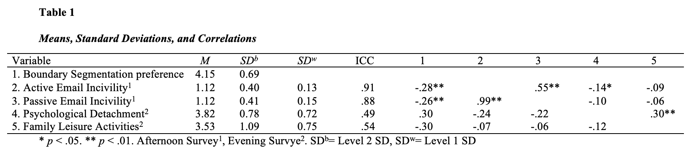
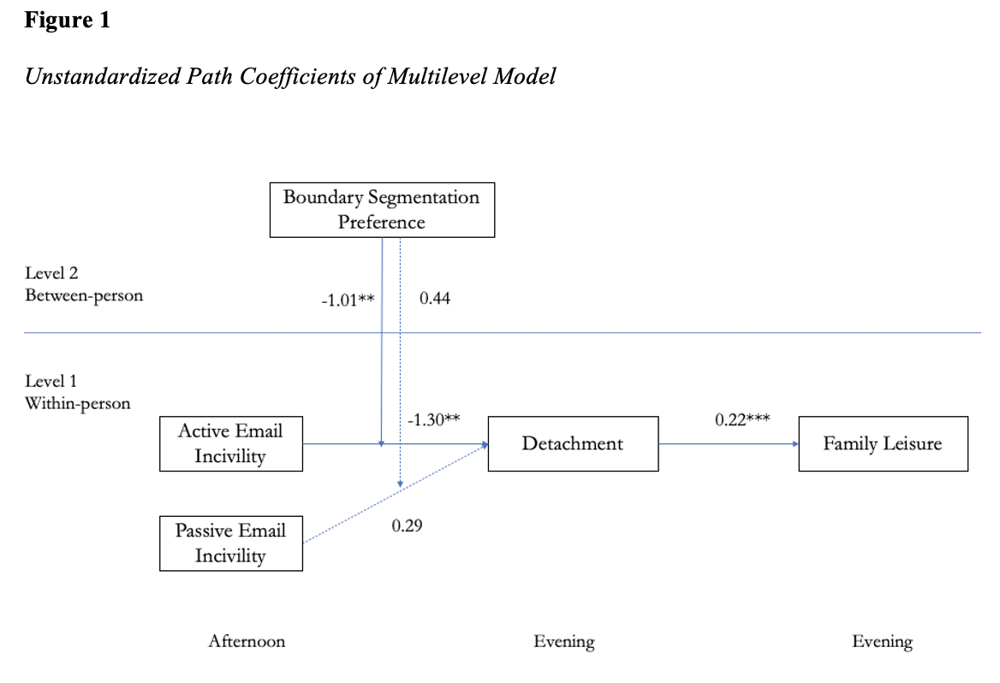
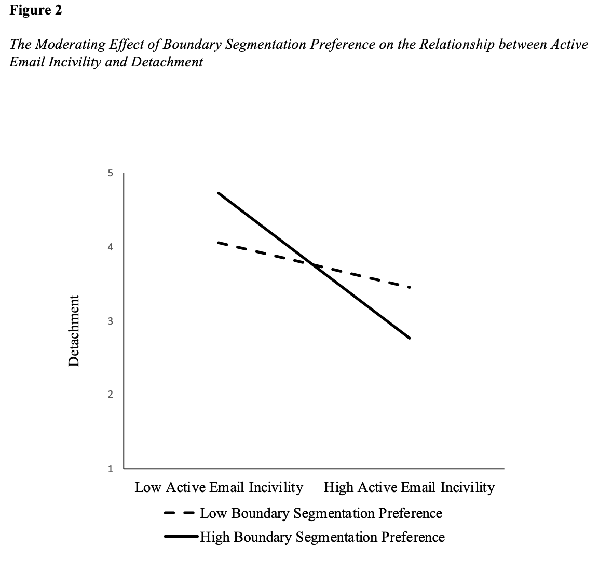

We examined whether and how email incivility at work could impact family leisure activities, the mediating role of detachment and boundary segmentation preferences as a moderator. Using a daily diary design, we collected data from 121 participants across 10 workdays and found support for the mediating role of psychological detachment. However, the negative relationship between active email incivility and detachment was stronger for individuals with higher boundary segmentation preference but was not a significant moderator in the relationship between passive email incivility and detachment. This study will be presented at the 2023 SIOP conference.
Workplace incivility refers to rude and discourteous behaviors and remarks towards others at work that signal disrespect (Andersson & Pearson, 1999). Extensive research over the last two decades has shown that incivility is related to negative affective, cognitive, attitudinal, behavioral, and health-related outcomes for employees (Han et al., 2022; Schilpzand et al., 2016). However, there has been less focus on how incivility manifests in virtual environments, such as work emails (Park & Haun, 2018). As such, email incivility, defined as email communications and behaviors that go against workplace norms of mutual respect (Lim & Teo, 2009), has received less attention compared to general workplace incivility. However, initial findings suggest that email incivility may also have negative work outcomes for employees. For example, prior research has found that email incivility predicts lower job performance (Giumetti et al., 2016), more distress at work (Park et al., 2018), and more employee cyberloafing at work (Zhou et al., 2022).
Meanwhile, a few studies have examined the effect of email incivility on nonwork outcomes such as distress at home the next day (Park et al., 2018), insomnia (Yuan et al., 2020), and work withdrawal for focal employees’ partner (Park & Haun, 2018). These findings indicate that email incivility experience at work has the potential to play an important role affecting employees’ nonwork lives, in which employees engage in various recovery experiences such as psychological detachment from work, relaxation, mastery, and control (Sonnentag and Fritz, 2007). Among them, detachment is one of the most important recovery experiences that can be further associated with employee health and well-being (Sonnentag & Fritz, 2015). Thus, in the current study, we explore whether email incivility can impact detachment after work to extend our understanding of the impact of email incivility on employees’ recovery experiences after work. Further, we identify family leisure activities as a distal outcome of email incivility through detachment: when employees are unable to detach from their work, they may find themselves repeatedly thinking about work or work-related experiences (Sonnentag & Fritz, 2015) and as a result may have less energy and attention to engage in family leisure activities. Through them, the current study aims to make two main contributions to the existing literature.
First, we investigate whether detachment, defined as an employee’s ability to mentally disconnect from work and not engage in any work-related thoughts, tasks, or activities following working hours (Sonnentag & Fritz, 2007), may mediate the relationship between email incivility and family leisure activities after work. The stressor-detachment model (Sonnentag & Fritz, 2015) suggests that detachment plays a key role in stressor-strain relationships such that employees are less likely to detach from their work when they experience more job stressors, resulting in more strain reactions. Thus, when employees experience more email incivility at work, a negative work-related experience (Zhou et al., 2022), they are likely to be less detached after work because employees may feel frustrated and try to make sense of the uncivil email event (Park et al., 2018). Due to this lack of detachment, employees may direct their energy and attention to past work-related experiences (i.e., email incivility; Giumetti et al., 2013; Park et al., 2015) over focusing on their family domain, and engage in fewer activities in the family domain (e.g., family leisure activities). By examining family leisure activities as a strain reaction to email incivility via detachment, we will extend the understanding of negative impact of email incivility on employees nonwork outcomes.
Second, we explore individual boundary segmentation preference as a moderator that might buffer the negative effect of email incivility on detachment. Boundary segmentation preference refers the extent to which an employee prefers to have work and nonwork domains separated (Kreiner, 2006). According to the stressor-detachment model (Sonnentag & Fritz, 2015), the relationship between job stressors and detachment is moderated by attentional processes. Because those with higher boundary segmentation preference are more likely to direct their attention to the domain hey are in, they will be less attentive to work-related affairs when they are in the home domain (Kreiner, 2006; Sonnentag & Fritz, 2015). Thus, when they experience email incivility during working hours, they will spend less attentional resources focusing on the event when they are in the family domain and the negative effect of email incivility on detachment will be weaker for them.
Stressor-Detachment Model
The current study draws on Sonnentag and Fritz’s (2015) stressor-detachment model as the main theoretical framework, which suggests that job stressors predict low levels of detachment from work. Specifically, stress reactions and subsequent sustained activation triggered by job stressors can inhibit individuals’ ability to mentally disengage from work during nonwork time even when the stressors are no longer present (Sonnentag et al., 2017). Additionally, low levels of detachment result in high strain levels and poor well-being (Sonnentag & Fritz, 2007). Using this model, below we will argue that email incivility as a job stressor negatively predicts family leisure activities via decreased detachment.
Email Incivility and Psychological Detachment
In the current study, we propose that both active and passive email incivility at work will negatively predict detachment after work. Specifically, active email incivility, such as a discourteous email, can convey a sense of disrespect to the targets (Yuan et al., 2020) which may lead to stress reactions and sustained activation following the event, resulting in poor psychological detachment from work during nonwork time (Sonnentag & Fritz, 2015). Meanwhile, passive email incivility such as the lack of proper responses to a work-related request can be appraised to have more ambiguity (Yuan et al., 2020) and this ambiguous appraisal is likely to cause targets to ruminate more about the incivility experience, a key predictor of poor psychological detachment (Sonnentag & Fritz, 2015).
Psychological Detachment and Family Leisure
Family leisure activities refer to one spending time with family members on recreational activities (Shaw, 1997). According to the stressor-detachment model, detachment is crucial in allowing an individual’s strain level to return to its pre-stressor level following a reaction to a stressor (Sonnentag & Fritz, 2015) and for individuals to direct their attentional resources towards leisure activities (Sonnentag & Fritz, 2015). By “switching off” and forgetting about work during nonwork time, individuals attenuate the intrapersonal barrier to participating in evening family leisure activities (Crawford & Godbey, 1987). Thus, detachment allows strain levels to return to pre-stressor levels which reduces any psychological leisure barriers, resulting in increased engagement in evening family leisure activities (Crawford & Godbey, 1987; Sonnentag et al., 2017).
Mediating Role of Detachment
Based on the stressor-detachment model (Sonnentag & Fritz, 2015), detachment mediates the relationship between job stressors and strains. Targets of email incivility will find it more difficult to psychologically detach from work during nonwork time due to rumination about the stressor (Park et al., 2018, Sonnentag et al., 2017), which may leave employees feeling more drained in the evenings and unable to direct their attentional resources towards leisure activities (Park et al., 2018; Sonnentag & Fritz, 2015). Thus, the following is hypothesized:
Moderating Role of Boundary Segmentation Preference
The stressor-detachment model (Sonnentag & Fritz, 2015) posits that the relationship between job stressors and detachment are moderated by the amount of attention an employee directs towards their job. Specifically, while experiences of email incivility may make it more difficult to detach from work because they represent a negative work-related event (Zhou et al., 2022), employees with higher boundary segmentation preference are less likely to be affected because they tend not to devote attention to work-related matters when they in the home domain (Peters et al., 2014; Sonnentag & Fritz, 2015). In addition, because employees with higher boundary segmentation preference feel more inclined to preserve their non-work hours from work-related matters (Powell & Greenhaus, 2010), they are less inclined to ruminate over work-related events when they are home, making detachment from their work more likely.
Participants and Procedures
Our participants were recruited from Academic Prolific, an online crowdsourcing platform providing high-quality data for scientific research (Palan & Schitter, 2018). Participants were considered eligible to participate the current study if they were at least 18 years old, fluent in English, working full-time, working a 9-5 shift, lived in the United States, and had an approval rating of 90% or higher in previous studies on Academic Prolific. Participants first completed a baseline survey. Then, during the next two weeks, participants completed an afternoon survey between 4-6pm and evening survey between 8-10pm.
A total of 147 participants completed the baseline survey and signed up for the daily data collection, and 121 participants provided useable data (matched afternoon-evening survey for at least two days) that was included in our data analysis. Based on this sample, the average age was 33.63 years old (SD = 7.58), a majority were male (71.1%) and White (81%). They worked an average of 41.55 hours per week (SD = 4.22) and came from a variety of industries such as service (19.2%), finance (14.9%), manufacturing (14.2%), medical/social service (11.7%), and education (5.8%).
Measures
We measured demographic variables and boundary segmentation in the baseline survey, daily email incivility experience in the afternoon survey, and detachment and family leisure activities in the evening survey. All measures used a 5-point scale from 1 (Strongly Disagree) to 5 (Strongly Agree) unless otherwise specified.
_ Email Incivility. We measured afternoon active (seven items) and passive (seven items) email incivility from Lim and Teo (2009). Participants were asked how many times they have experienced each of the 14 events during the day from coworkers, and responses ranged from 1 (Never) to 6 (5 Times or More). An example item for active incivility was “Made demeaning or derogatory remarks about you through email” (average α = .95), and an example item for passive incivility was “Replied to your emails but did not answer your queries” (average α = .95).
Detachment. We measured evening psychological detachment using four items from Sonnentag and Fritz (2007). An example item was “During time after work, I forget about work” (average α = .92).
Family Leisure. We measured evening family leisure activities using three items from Sonnentag and Fritz (2007). An example item was “I relaxed with my spouse/partner/family members” (average α = .97).
Analytic Strategy
Because our data has daily variables (level 1) nested within individuals (level 2), we used multilevel modeling to test our hypotheses with Mplus 8.3 (Muthén & Muthén, 2010) in a multilevel path analysis model. We followed the recommendations from Enders and Tofighi (2007) to group-mean center our level 1 predictors (active email incivility and passive email incivility) and grand-mean center our level 2 predictor (boundary segmentation preference). In all models, we specified random slope effects for all level 1 relationships proposed in our hypotheses. We estimated the 95% confidence intervals (CIs) for indirect effects with the 20,000 Monte Carlo replications (Preacher et al., 2010).
Table 1 shows the intraclass correlation coefficients (ICCs), means, standard deviations, and correlations among study variables both at level 1 and level 2.

Figure 1 shows the unstandardized regression coefficients for our two-level model. While active email incivility significantly predicted detachment (gamma = -1.30, p < .01), passive email incivility did not have a significant main effect on detachment ( = 0.29, p =.55). Thus, Hypothesis 1a was supported while Hypothesis 1b was not. Detachment significantly predicted family leisure activities (gamma = 0.22, p < .001), supporting Hypothesis 2. Meanwhile, the indirect effect of active email incivility on family leisure activities via detachment was significant (indirect effect= -0.29, 95% CI [-.55, -.09]). Thus, Hypothesis 3a was supported while Hypothesis 3b was not.

Figure 1 shows that boundary segmentation preference significantly moderated the effect of active email incivility on detachment (gamma = -1.01, p < .01), but did not significantly moderate the effect of passive email incivility on detachment (gamma = 0.44, p = .058). However, Figure 2 shows that the negative relationship between active email incivility and detachment was stronger for those with higher boundary segmentation preference, which is opposite to our prediction. Thus, neither Hypothesis 4a nor 4b was supported.

In the present study, we explored the effects of daily active and passive email incivility experiences on employees’ evening family leisure activities via evening detachment and explored the moderating role of boundary segmentation preference. Our findings suggest that daily active email incivility has a negative effect on evening detachment and subsequent evening family leisure activities. In addition, moderation analyses suggests that the negative effect of daily active incivility on detachment was stronger for those with higher boundary segmentation.
Theoretical Implications
Our findings have a few theoretical implications. First, our findings suggest that email incivility, like face-to-face incivility (Nicholson & Griffin, 2015), can negatively affect employee recovery experiences. Thus, we extend the nonwork outcomes of email incivility by demonstrating that active email incivility experiences at work negatively impact detachment and subsequent participation in family leisure activities after work. This is a critical finding given that many employees are expected to continue to work remotely which increases reliance on email communications to interact with coworkers and clients (Hilberath et al., 2020).
Second, our findings corroborate the usefulness of differentiating between active and passive email incivility (Yuan et al., 2020; Zhou et al., 2022). Active email incivility had both a significant direct impact on detachment and a significant indirect impact on family leisure via detachment, while passive email incivility did not. This may be due to the ambiguous nature of passive email incivility (Yuan et al., 2020) eliciting a weaker stress reaction in the target. The disrespect conveyed in active email incivility leads to a strong, sustained stress reaction which interferes with psychological detachment in a more direct manner.
Third, utilizing the stressor-detachment model (Sonnentag & Fritz, 2015), we found that detachment can act as the mechanism linking active email incivility and family leisure activities. Like findings in face-to-face incivility research (Cortina et al., 2017; Nicholson & Griffin, 2015), we found that daily active email incivility negatively impacted employees’ ability to psychologically detach from work in the evenings. Subsequently, employees feel more drained due to continued rumination about the stressor and are unable to direct their attentional resources towards family leisure activities.
Lastly, we tested the theoretical proposition that attentional resources like boundary segmentation preference may mitigate the relationship between job stressors and psychological detachment (Sonnentag & Fritz, 2015). However, our findings are opposite to this proposition such that boundary segmentation preference strengthens the negative relationship between email incivility and detachment. One possible reason for this could be that individuals with higher boundary segmentation preference may be more sensitive to the spillover effect of email incivility because they prefer to have two segmented domains (Kreiner, 2006). Thus, when they experience greater email incivility, their preference may be unfulfilled and they may continue thinking about the event, making detachment less likely.
Practical Implications
Our findings also have practical implications. First, given the established findings on email incivility’s negative implications for employee well-being (Park et al., 2018; Zhou et al., 2022) and our findings, it is evident that organizations should recognize the importance of civil email correspondence and promote such norms among employees by modeling civil email communications (Taylor et al., 2005).
Second, given the mediating role of detachment between email incivility and family leisure, organizations should promote the importance of detachment from work during nonwork hours by educating employees on strategies to shift their focus to the nonwork domain in evening hours such as mindfulness training (Hülsheger et al., 2014) and strategies to enhance confidence in dealing with uncivil email communications (Jex et al., 2001). Further, organizational policies that encourage employees to refrain from checking non-urgent emails outside of their working hours may also be useful (Lee et al., 2020).
Limitations and Future Directions
The current study has a few limitations that future research should try to address. First, while we did separate our measures across the baseline survey, afternoon survey, and evening survey, as a way to reduce the likelihood of common method variance (CMV; Podsakoff et al., 2003), we only collected self-report data, thus some concern over CMV remains. Future research could collect data from alternative sources by asking focal employees’ spouses to report how much time focal employees’ spend engaging in family leisure activities. Second, we measured detachment and family leisure in the same survey, which may minimize our understanding of the direction of their relationship. As such, future research should attempt to replicate our findings by measuring them separately. Relatedly, causality cannot be inferred from our research design, therefore, future research should consider an experimental design to see if the causal link in our proposed research model holds true. Lastly, the use of a Prolific sample my raise questions about the generalizability of our findings because these sources are not representative of the general population (Keith et al., 2017).
The current study’s findings suggest that targets of active email incivility are less likely to psychologically detach and be less likely to engage in family leisure activities after work. Further, individuals with higher boundary segmentation preferences seem to be more likely to be affected by active email incivility.
Andersson, L. M., & Pearson, C. M. (1999). Tit for tat? The spiraling effect of incivility in the workplace. Academy of Management Review, 24(3), 452-471. https://doi.org/10.5465/amr.1999.2202131
Ashforth, B. E., Kreiner, G. E., & Fugate, M. (2000). All in a day’s work: Boundaries and micro role transitions. Academy of Management Review, 25(3), 472-491. https://doi.org/10.5465/amr.2000.3363315
Cortina, L. M., Kabat-Farr, D., Magley, V. J., & Nelson, K. (2017). Researching rudeness: The past, present, and future of the science of incivility. Journal of Occupational Health Psychology, 22(3), 299–313. https://doi.org/10.1037/ocp0000089
Crawford, D. W., & Godbey, G. (1987). Reconceptualizing barriers to family leisure. Leisure Sciences, 9(2), 119-127. https://doi.org/10.1080/01490408709512151
Giumetti, G. W., Hatfield, A. L., Scisco, J. L., Schroeder, A. N., Muth, E. R., & Kowalski, R. M. (2013). What a rude e‐mail! Examining the differential effects of incivility versus support on mood, energy, engagement, and performance in an online context. Journal of Occupational Health Psychology, 18(3), 297–309. https://doi.org/10.1037/a0032851
Han, S., Harold, C. M., Oh, I. S., Kim, J. K., & Agolli, A. (2022). A meta‐analysis integrating 20 years of workplace incivility research: Antecedents, consequences, and boundary conditions. Journal of Organizational Behavior, 43(3), 497-523. https://doi.org/10.1002/job.2568
Haun, V. C., Remmel, C., & Haun, S. (2022). Boundary management and recovery when working from home: The moderating roles of segmentation preference and availability demands. German Journal of Human Resource Management, 23970022221079048. https://doi.org/10.1177/23970022221079048
Hilberath, C., Kilmann, J., Lovich, D., Tzanetti, T., Bailey, A., Beck, S., … & Woolsey, K. (2020). Hybrid work is the new remote work. Boston Consulting Group. Viitattu, 8, 2021.
Hülsheger, U. R., Lang, J. W. B., Depenbrock, F., Fehrmann, C., Zijlstra, F. R. H., & Alberts, H. J. E. M. (2014). The power of presence: The role of mindfulness at work for daily levels and change trajectories of psychological detachment and sleep quality. Journal of Applied Psychology, 99(6), 1113–1128. https://doi.org/10.1037/a0037702
Jex, S. M., Bliese, P. D., Buzzell, S., & Primeau, J. (2001). The impact of self-efficacy on stressor–strain relations: Coping style as an explanatory mechanism. Journal of Applied Psychology, 86(3), 401–409. https://doi.org/10.1037/0021-9010.86.3.401
Keith, M. G., Tay, L., & Harms, P. D. (2017). Systems perspective of Amazon Mechanical Turk for organizational research: Review and recommendations. Frontiers in psychology, 8, 1359. doi:10.3389/fpsyg.2017.01359
Kossek, E. E., & Lautsch, B. A. (2012). Work–family boundary management styles in organizations: A cross-level model. Organizational Psychology Review, 2(2), 152-171. https://doi.org/10.1177/2041386611436264
Kreiner, G. E. (2006). Consequences of work‐home segmentation or integration: A person‐environment fit perspective. Journal of Organizational Behavior, 27(4), 485–507. https://doi.org/10.1002/job.386
Lee, S., Zhou, Z. E., Xie, J., & Guo, H. (2021). Work-related use of information and communication technologies after hours and employee fatigue: the exacerbating effect of affective commitment. Journal of Managerial Psychology, 36(6), 477-490. https://doi.org/10.1108/JMP-12-2019-0677
Lim, V. K., & Teo, T. S. (2009). Mind your E-manners: Impact of cyber incivility on employees’ work attitude and behavior. Information & Management, 46(8), 419-425. https://doi.org/10.1016/j.im.2009.06.006
Muthén, L. K., & Muthén, B. O. (2010). Growth modeling with latent variable using Mplus: Advanced growth models, survival analysis and missing data. Mplus short courses.
Nicholson, T., & Griffin, B. (2015). Here today but not gone tomorrow: Incivility affects after-work and next-day recovery. Journal of Occupational Health Psychology, 20(2), 218–225. https://doi.org/10.1037/a0038376
Palan, S., & Schitter, C. (2018). Prolific. ac—A subject pool for online experiments. Journal of Behavioral and Experimental Finance, 17, 22-27. https://doi.org/10.1016/j.jbef.2017.12.004
Park, Y., Fritz, C., & Jex, S. M. (2015). Daily email incivility and distress: The moderating roles of resources at work and home. Journal of Management. Advance online publication. https://doi.org/10.1177/0149206315576796
Park, Y., & Haun, V. C. (2018). The long arm of email incivility: Transmitted stress to the partner and partner work withdrawal. Journal of Organizational Behavior, 39(10), 1268-1282. https://doi.org/10.1002/job.2289
Podsakoff, P. M., MacKenzie, S. B., Lee, J.-Y., & Podsakoff, N. P. (2003). Common method biases in behavioral research: A critical review of the literature and recommended remedies. Journal of Applied Psychology, 88(5), 879–903. https://doi.org/10.1037/0021-9010.88.5.879
Porath, C. L., & Pearson, C. M. (2010). The cost of bad behavior. Organizational Dynamics, 39(1), 64–71. https://doi.org/10.1016/j.orgdyn.2009.10.006
Powell, G. N., & Greenhaus, J. H. (2010). Sex, gender, and the work-to-family interface: Exploring negative and positive interdependencies. Academy of Management Journal, 53(3), 513-534. https://doi.org/10.5465/amj.2010.51468647
Preacher, K. J., Zyphur, M. J., & Zhang, Z. (2010). A general multilevel SEM framework for assessing multilevel mediation. Psychological Methods, 15(3), 209–233. https://doi.org/10.1037/a0020141
Schilpzand, P., De Pater, I. E., & Erez, A. (2016). Workplace incivility: A review of the literature and agenda for future research. Journal of Organizational Behavior, 37, S57-S88. https://doi.org/10.1002/job.1976
Schlachter, S., McDowall, A., Cropley, M., & Inceoglu, I. (2018). Voluntary work‐related technology use during non‐work time: A narrative synthesis of empirical research and research agenda. International Journal of Management Reviews, 20(4), 825-846. https://doi.org/10.1111/ijmr.12165
Shockley, K. M., Allen, T. D., Dodd, H., & Waiwood, A. M. (2021). Remote worker communication during COVID-19: The role of quantity, quality, and supervisor expectation-setting. Journal of Applied Psychology, 106(10), 1466–1482. https://doi.org/10.1037/apl0000970
Sonnentag, S., & Fritz, C. (2007). The Recovery Experience Questionnaire: Development and validation of a measure for assessing recuperation and unwinding from work. Journal of Occupational Health Psychology, 12(3), 204–221. https://doi.org/10.1037/1076-8998.12.3.204
Sonnentag, S., & Fritz, C. (2015). Recovery from job stress: The stressor‐detachment model as an integrative framework. Journal of Organizational Behavior, 36(S1), S72-S103. https://doi.org/10.1002/job.1924
Sonnentag, S., Venz, L., & Casper, A. (2017). Advances in recovery research: What have we learned? What should be done next? Journal of Occupational Health Psychology, 22(3), 365–380. https://doi.org/10.1037/ocp0000079
Taylor, P. J., Russ-Eft, D. F., & Chan, D. W. L. (2005). A Meta-Analytic Review of Behavior Modeling Training. Journal of Applied Psychology, 90(4), 692–709. https://doi.org/10.1037/0021-9010.90.4.692
Yuan, Z., Park, Y., & Sliter, M. T. (2020). Put you down versus tune you out: Further understanding active and passive e-mail incivility. Journal of Occupational Health Psychology, 25(5), 330–344. https://doi.org/10.1037/ocp0000215
Zhou, Z. E., Pindek, S., & Ray, E. J. (2022). Browsing away from rude emails: Effects of daily active and passive email incivility on employee cyberloafing. Journal of Occupational Health Psychology. Advance online publication. https://doi.org/10.1037/ocp0000325